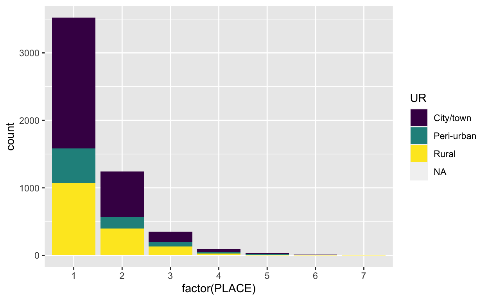
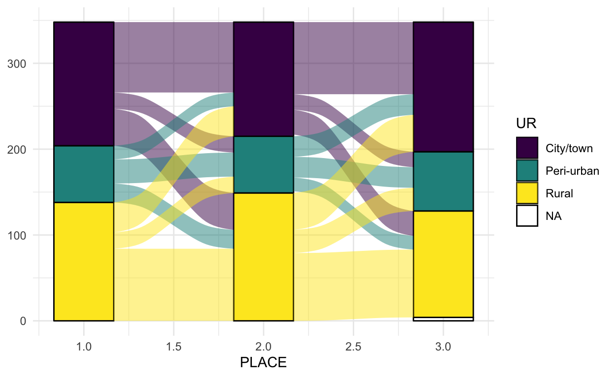
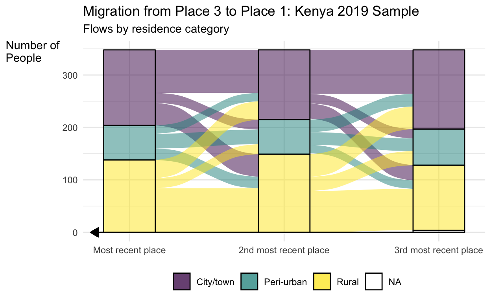
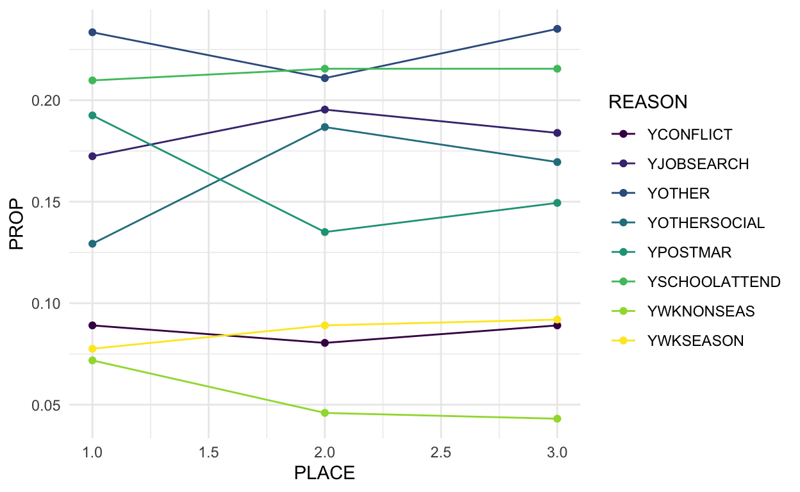
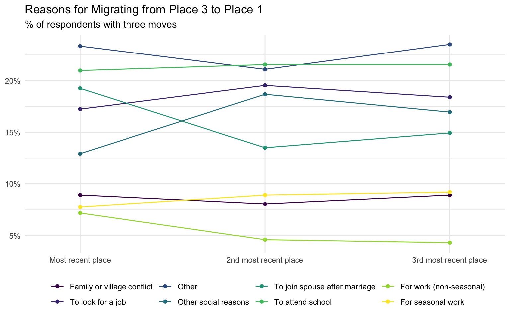
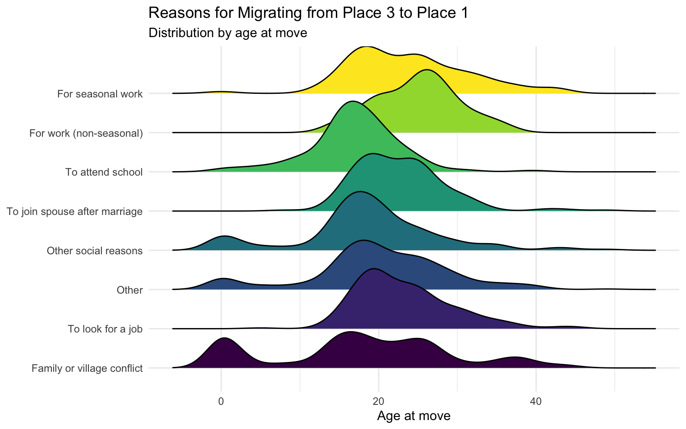

How to visualize patterns in migration data using alluvial plots, line plots, and density plots.
Migration is an incredibly important, global demographic process. Yet, studying migration is often challenging due to data limitations. As we showed in a recent post, several new PMA samples include data about each respondent’s complete migration history, organized in chronological order. They include information on when respondents move (their age), the district or region they moved from, whether the place they moved from was a city, a town, peri-urban, or rural, and reasons why they moved.
This data opens up the opportunity to examine many interesting questions about migration such as:
In this post, we’ll walk through three descriptive analyses that address aspects of these questions using the 2019 Kenya sample migration data from the last post in this series. Descriptive, exploratory work like this is an essential first step to any good analysis – and visualizing the data can help illuminate patterns across different dimensions. First, we’ll demonstrate how to visualize flows of migration across the urban-rural spectrum. Then, we’ll dig into the reasons why people moved to previous residences. Finally, we’ll explore how these reasons vary according to age at the time of migration.
We’ll be working with the same Kenya 2019 data extract we created for the previous post in this series (female respondents only). It contains all of the variables shown on the migration topic page.
In addition to loading the two standard packages we always use (ipumsr and tidyverse), we also load the ggalluvial package that we’ll use to make an alluvial plot and the ggridges package that we’ll use to make an overlapping ridgeline (aka density) plot. If this is the first time you’re using ggalluvial and ggridges, make sure to install them first using install.packages(c("ggalluvial", "ggridges")).
Recall that the migration data are stored in wide format, with many variables to capture information about each move for every single individual. We’ll quickly run the code from the last post that uses pivot_longer() to convert this into the much more useful long format. We’ll also replace the special codes as NA and create an ID that represents a short identification number for each person.
library(ipumsr)
library(ggalluvial)
library(ggridges)
library(tidyverse)
dat <- read_ipums_micro(
ddi = "data/pma_00016.xml",
data = "data/pma_00016.dat.gz"
)
dat <- dat %>%
mutate(across(everything(), ~{
lbl_na_if(.x, ~.lbl %in% c(
"No response or missing",
"NIU (not in universe)"
))
})) %>%
rowid_to_column("ID") %>%
select(ID, starts_with("PLACE"), -PLACELIVENUM) %>%
pivot_longer(
cols = starts_with("PLACE"),
names_pattern = "PLACE([0-9]*)(.*)",
names_to = c("PLACE", ".value"),
values_drop_na = TRUE
) %>%
mutate(
UR = as_factor(UR),
PLACE = as.numeric(PLACE)
)
Now that the data are in a long format, each row of the data represents one place in a respondent’s migration history. For example, notice that person ID == 20 occupies two rows, one for each of the two places she listed:
dat
# A tibble: 5,251 x 24
ID PLACE COUNTRY DISTRICTKE MOVEAGE UR YCHILDEDU YCOHABIT
<int> <dbl> <int+lbl> <int+lbl> <int+l> <fct> <int+lbl> <int+lb>
1 2 1 404 [Keny… 6 [Nairob… 16 Rural 0 [No] 0 [No]
2 11 1 404 [Keny… 10 [Kakame… 17 Rural 0 [No] 0 [No]
3 12 1 404 [Keny… 10 [Kakame… 16 City… 0 [No] 0 [No]
4 14 1 404 [Keny… 7 [Nandi] 29 Rural 0 [No] 0 [No]
5 14 2 404 [Keny… 32 [Migori] 19 City… 0 [No] 0 [No]
6 16 1 404 [Keny… 6 [Nairob… 21 Rural 0 [No] 0 [No]
7 19 1 404 [Keny… 33 [Mombas… 31 Peri… 0 [No] 0 [No]
8 20 1 404 [Keny… 8 [Nyamir… 19 City… 0 [No] 0 [No]
9 20 2 404 [Keny… 8 [Nyamir… 21 Peri… 0 [No] 0 [No]
10 21 1 404 [Keny… 6 [Nairob… 34 Peri… 0 [No] 0 [No]
# … with 5,241 more rows, and 16 more variables: YCONFLICT <int+lbl>,
# YDIVORCE <int+lbl>, YFARM <int+lbl>, YHLTHACCESS <int+lbl>,
# YHLTHPROB <int+lbl>, YJOBSEARCH <int+lbl>, YOTHER <int+lbl>,
# YOTHERSOCIAL <int+lbl>, YPOSTMAR <int+lbl>,
# YSCHOOLATTEND <int+lbl>, YSCHOOLDONE <int+lbl>,
# YSICKREL <int+lbl>, YSPOUSEJOB <int+lbl>, YWKCHANGE <int+lbl>,
# YWKNONSEAS <int+lbl>, YWKSEASON <int+lbl>Alluvial plots are a useful way to represent flows of data according by categorical variables. A “classic” alluvial plot maps flows of passengers on the Titanic according to various characteristics and whether or not they survived.
Figure 1: Figure from https://cran.r-project.org/web/packages/ggalluvial/vignettes/ggalluvial.html
Alluvial plots are particularly useful for visualizing flows over time – this means we can map the characteristics of respondents across different moves and places they’ve lived! This can be really informative for migration data.
One topic migration researchers are often interested in studying is how people move across the urban-rural spectrum. The PMA migration module includes a variable that classifies each residence respondents previously lived in as urban, peri-urban, or rural. Here we can see that individual 2 previously lived in a rural location. Individual 14 lived in two previous residences: the most recent (PLACE == 1) was a rural location, and prior to that (PLACE == 2) she lived in a city or town.
dat %>%
select(ID, PLACE, UR)
# A tibble: 5,251 x 3
ID PLACE UR
<int> <dbl> <fct>
1 2 1 Rural
2 11 1 Rural
3 12 1 City/town
4 14 1 Rural
5 14 2 City/town
6 16 1 Rural
7 19 1 Peri-urban
8 20 1 City/town
9 20 2 Peri-urban
10 21 1 Peri-urban
# … with 5,241 more rowsOne way to visualize this data is to make a bar plot that shows the number of respondents in each residence category across all seven previous residences that PMA collects information about.
dat %>%
ggplot(aes(x = factor(PLACE), fill = UR)) +
geom_bar(stat = "count") +
scale_fill_viridis_d()

This bar plot shows the distribution of living in an urban/peri-urban/rural location over different residences across the sample, but it doesn’t tell us anything about the flows. For example, we might want to know if people are moving from rural to urban places and vice versa. This is where an alluvial plot can add a lot of value! Another thing that is very apparent from this plot is that very few people have lived in more than three previous residences, so going forward we’ll restrict the sample to people who have lived in at least three previous locations.
The ggalluvial package makes it easy to generate alluvial plots using the ggplot2 grammar of graphics. There are a few key elements to an alluvial plot:
We’ll specify these elements using the standard ggplot2 syntax. First, we’ll count the total number of places each respondent has lived so that we can restrict the alluvial plot to respondents with at least three previous residences and then look at the flows between different categories of residence for the three most recent places. When making the alluvial plot, we’ll add the axes using + geom_stratum(), the alluvia using + geom_flow(), and fill in the colors according to the UR variable.
dat <- dat %>%
group_by(ID) %>%
mutate(TOTAL_PLACES = max(PLACE)) %>%
ungroup()
# alluvial plot
dat %>%
filter(TOTAL_PLACES >= 3 & PLACE < 4) %>%
ggplot(aes(x = PLACE,
stratum = UR,
alluvium = ID,
fill = UR)) +
geom_stratum() +
geom_flow() +
scale_fill_viridis_d() +
theme_minimal()

We can see quite a bit more detail about the types of places people are moving to and from with this alluvial plot compared to the bar plot. For example, we can see that most people who lived in a city/town moved to another urban location from place 3 to 2 to 1. Rural residents followed a similar pattern. In contrast, we see the most movement across categories from people whose 3rd most recent residence was peri-urban. Despite the fact that most urban migrants move to other urban locations and most rural migrants move to other rural locations, this plot also makes it clear there is a fair amount of rural to urban/peri-urban migration, and even urban to rural migration! Finally, we can also see there is a small number of people for whom we’re missing data on their oldest (PLACE == 3) location.
It was pretty simple to create this alluvial plot off-the-shelf, but we can do a bit of work to improve the clarity and presentation of this plot.
dat %>%
filter(TOTAL_PLACES >= 3 & PLACE < 4) %>%
mutate(PLACE = PLACE %>% as_factor %>% fct_recode(
"Most recent place" = "1",
"2nd most recent place" = "2",
"3rd most recent place" = "3"
)) %>%
ggplot(aes(x = PLACE,
stratum = UR,
alluvium = ID,
fill = UR)) +
scale_x_discrete(expand = c(.1, .1)) +
geom_flow() +
geom_stratum(alpha = .5) + # increases the transparency of the axes' colors
scale_fill_viridis_d() +
theme_minimal() +
theme(legend.position = "bottom",
axis.title.y = element_text(angle = 0, hjust = 0)) +
labs(title = "Migration from Place 3 to Place 1: Kenya 2019 Sample",
subtitle = "Flows by residence category",
x = NULL,
fill = NULL,
y = "Number of\nPeople") + # the \n adds a line break
geom_segment(aes( # adds an arrow to indicate that time is moving from right to left
x = 0.75, xend = 3.16,
y = 0, yend = 0),
arrow = arrow(length=unit(0.30,"cm"),
ends="first",
type = "closed"))

We might also be interested in seeing how the reasons people migrate change from move to move. The PMA surveys asked why respondents moved to each previous place they lived, allowing people to select multiple responses. In fact, there are 19 possible answers for respondents to choose from. To make this a bit more manageable, let’s summarize the reasons people moved to their previous three locations and identify the most common reasons:
dat %>%
filter(TOTAL_PLACES >= 3 & PLACE < 4) %>%
group_by(PLACE) %>%
summarise(
across(starts_with("Y"),
~100*mean(.x))) %>%
pivot_longer( # pivot_longer to sort by reason
cols = starts_with("Y"),
names_to = "REASON") %>%
pivot_wider(
names_from = "PLACE" # pivot wider to easily see each of the 3 places as columns
) %>%
arrange(-`1`, -`2`, -`3`)
# A tibble: 18 x 4
REASON `1` `2` `3`
<chr> <dbl> <dbl> <dbl>
1 YSCHOOLATTEND 21.0 21.6 21.6
2 YPOSTMAR 19.3 13.5 14.9
3 YJOBSEARCH 17.2 19.5 18.4
4 YOTHERSOCIAL 12.9 18.7 17.0
5 YOTHER 10.1 10.1 11.2
6 YCONFLICT 8.91 8.05 8.91
7 YWKSEASON 7.76 8.91 9.20
8 YWKNONSEAS 7.18 4.60 4.31
9 YSCHOOLDONE 5.17 2.87 4.89
10 YSPOUSEJOB 4.02 2.87 4.02
11 YFARM 3.45 3.45 5.75
12 YWKCHANGE 3.16 2.30 3.74
13 YHLTHACCESS 2.59 2.30 3.16
14 YCHILDEDU 1.72 1.72 2.59
15 YCOHABIT 1.15 2.59 2.30
16 YSICKREL 1.15 2.30 0.575
17 YHLTHPROB 0.862 1.72 2.01
18 YDIVORCE 0.862 0.862 1.15 We can see that across the three locations, the most common reasons to move are: to attend school (YSCHOOLATTEND), to join a spouse after marriage (YPOSTMAR), to look for a job (YJOBSEARCH), other social reasons (YOTHERSOCIAL), other (YOTHER), because of family or village conflict (YCONFLICT), and for seasonal work (YWKSEASON). Because it will be difficult to see much with so many categories, we’ll aggregate all the less common reasons into YOTHER.
Since each reason is stored as a different binary variable, we’ll first pivot_longer() again to create a variable called REASON that store the reason for migrating and a binary variable, VALUE, that equals 1 if the individual selected this as a reason for migrating. Then, we’ll use the very handy forcats::fct_lump_n() from the tidyverse to lump together less common responses into a single “other” category.
Additionally, since individuals can select multiple reasons, this variable is not well-suited to an alluvial plot, so we’ll look at how the proportion of respondents who selected each reason changes from each migration.
mig_reasons <- dat %>%
filter(TOTAL_PLACES >= 3 & PLACE < 4) %>%
pivot_longer( # pivot_longer to sort by reason
cols = starts_with("Y"),
names_to = "REASON",
values_to = "VALUE"
) %>%
mutate(REASON = REASON %>%
as_factor %>%
fct_lump_n(n = 8, w = VALUE, other = "YOTHER") %>%
fct_relevel(sort)
) %>%
group_by(ID, PLACE, REASON, VALUE) %>%
slice(1) %>% # to get rid of duplicate OTHER rows
group_by(PLACE, REASON) %>%
summarise(PROP = mean(VALUE)) %>%
ungroup()
mig_reasons %>%
ggplot(aes(x = PLACE,
y = PROP,
color = REASON,
group = REASON)) +
geom_line() +
geom_point() +
scale_color_viridis_d() +
theme_minimal()

Although many of the reasons have a similar proportion of responses across migrations, we can see that the proportion of people moving to join a spouse after marriage and moving for non-seasonal work increased from the least recent place to most recent place, while the proportion moving for seasonal work and other social reasons decreased. The most common reason for migrating – to attend school – remains pretty constant across moves for these respondents.
To make things a little easier to read, we’ll rename the reasons for migrating and tidy up the plot labels.
mig_reasons %>%
mutate(
PLACE = PLACE %>%
as_factor %>%
fct_recode(
"Most recent place" = "1",
"2nd most recent place" = "2",
"3rd most recent place" = "3"
),
REASON = REASON %>%
fct_recode(
"Family or village conflict" = "YCONFLICT",
"To look for a job" = "YJOBSEARCH",
"Other" = "YOTHER",
"Other social reasons" = "YOTHERSOCIAL",
"To join spouse after marriage" = "YPOSTMAR",
"To attend school" = "YSCHOOLATTEND",
"For work (non-seasonal)" = "YWKNONSEAS",
"For seasonal work" = "YWKSEASON"
)
) %>%
ggplot(aes(x = PLACE,
y = PROP,
color = REASON,
group = REASON)) +
geom_line() +
geom_point() +
scale_color_viridis_d() +
scale_x_discrete(expand = c(.1, .1)) +
scale_y_continuous(labels = scales::percent_format(accuracy = 1)) +
theme_minimal() +
labs(color = NULL,
x = NULL,
y = NULL,
title = "Reasons for Migrating from Place 3 to Place 1",
subtitle = "% of respondents with three moves") +
theme(legend.position = "bottom",
axis.title.y = element_text(angle = 0, hjust = 0))

The reasons people migrate likely differ by age and is of interest to researchers. To look at how the reasons for migration might differ by age, we’ll again look at the three most recent moves, where we have the most data. To visualize how the reasons for migration differ by age, we’ll use ggridges to make an overlapping density plot that shows the distribution of ages for each reason. We’ll use the same code from before to aggregate the less common reasons into an OTHER category and pivot_longer() to store all the reasons in a single variable.
dat %>%
filter(TOTAL_PLACES >= 3 & PLACE < 4) %>%
pivot_longer( # pivot_longer to sort by reason
cols = starts_with("Y"),
names_to = "REASON",
values_to = "VALUE"
) %>%
mutate(REASON = REASON %>%
as_factor %>%
fct_lump_n(n = 8, w = VALUE, other = "YOTHER") %>%
fct_relevel(sort) %>%
fct_recode(
"Family or village conflict" = "YCONFLICT",
"To look for a job" = "YJOBSEARCH",
"Other" = "YOTHER",
"Other social reasons" = "YOTHERSOCIAL",
"To join spouse after marriage" = "YPOSTMAR",
"To attend school" = "YSCHOOLATTEND",
"For work (non-seasonal)" = "YWKNONSEAS",
"For seasonal work" = "YWKSEASON"
)
) %>%
group_by(ID, PLACE, REASON, VALUE) %>%
slice(1) %>% # to get rid of duplicate OTHER rows
ungroup %>%
filter(VALUE == 1) %>%
ggplot(aes(x = MOVEAGE, y = REASON, fill = REASON)) +
geom_density_ridges() +
scale_fill_viridis_d() +
theme_minimal() +
theme(legend.position = "none") +
labs(y = NULL,
x = "Age at move",
title = "Reasons for Migrating from Place 3 to Place 1",
subtitle = "Distribution by age at move")
Warning: Removed 6 rows containing non-finite values
(stat_density_ridges).
This figure shows that people tend to migrate to attend school at younger ages than most of the other reasons, which is unsurprising. Comparing the distributions by age for migrating for seasonal and non-seasonal work, it appears more young people migrate for seasonal work. In contrast, the age distributions for moving to join a spouse after marriage, to look for a job, and for non-seasonal work are all pretty similar – suggesting individuals move for these reasons at similar ages. Interestingly, there are masses at the young end of the distribution for family or village conflict, other social reasons, and other. Something further investigation could dig into more!
We hope this helps generate ideas for how to visualize the PMA migration data! Let us know what migration questions you’re interested in researching!
If you see mistakes or want to suggest changes, please create an issue on the source repository.